Install the packages if you still don’t have them (e.g. install.packages(gapminder)). If you don’t have the uwpols501 package, you need to install it from GitHub. Install & load the devtools package first, and then execute install_github("UW-POLS501/r-uwpols501").
library(dplyr)
library(uwpols501)
library(gapminder)
library(broom)
library(ggplot2)
data(gapminder)
data(turnout)Also go to the following link to download a WDI dataset from 1980 to 2010. https://www.dropbox.com/s/qqb3vg66hxqfqzb/wdi_co2_gdp_1980_2010.csv?dl=0
Load the wdi dataset.
wdi <- read.csv("data/wdi_co2_gdp_1980_2010.csv")I use as a source of inspiration in this lesson Chris Adolph’s POLS-503 notes.
In a linear model, any unit change of a given covariate has always the same effect on the outcome variable. If the coefficient for that covariate is for example 0.54, it doesn’t matter if the unit change is from 1 to 2 or from 100,001 to 100,002. The expected effect on the outcome variable is always the same: 0.54 increase in the units of the dependent variable.
However, theoretically we may sometimes think that the way a covariate affects the response variable is not linear. For example, is the relationship between income and life expectancy linear? Or Acemoglu and Robinson (2006) argue that the relationship between inequality and democratization follows a U-shape. How do we deal with this non-linear relationships? Can we still use a linear models to estimate them?
\(y = \beta_{0} + \beta_{1}X_{1} + \beta_{2}X_{2}... + \epsilon\)
Think a little bit more about the relationship between Life Expectancy and GDP per capita. This relation is probably not linear. As the GDP per capita of a country increases, on average its citizens have more resources, better nutrition, etc., so you would expect the Life Expectancy of that country to increase. However, at least with the technology and medicines that are currently available, at a certain point Life Expectancy cannot keep increasing at the same rate or it cannot increase at all.
Load the gapminder dataset from the gapminder package. Estimate a model that portrays lifeExp as a linear function of gdpPercap.
\(lifeExp = \beta_{0} + \beta_{1}gdpPercap + \epsilon\)
mod1a <- lm(lifeExp ~ gdpPercap, data = gapminder)Plot the lifeExp that we would predict using this model against the covariate gdpPercap.
mod1a_augm <- augment(mod1a, gapminder)
ggplot(mod1a_augm, aes(x = gdpPercap, y = .fitted)) +
geom_point()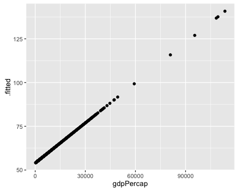
Uau! This model predicts that the Life Expectancy in Kuwait is 140 years!
Plot now the outcome variable lifeExp against the response variable gdpPercap.
ggplot(gapminder, aes(y = lifeExp, x = gdpPercap)) +
geom_point()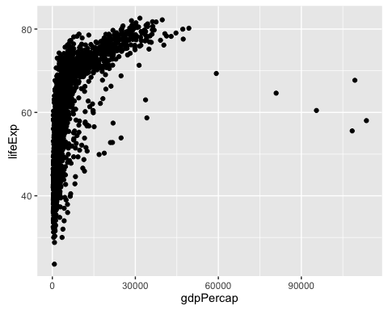
This graphs clearly shows that in the beginning, a unit increase on gdpPercap matters a lot in explaining lifeExp. However, at some point, extra units increase do not make much of a difference. We call this type of relation a Logarithmic Relation. How can we specify this logarithmic relation in a linear model?
If we believe that there is a logarithmic relation between the outcome variable and a covariate, this is the same as saying that there is a linear relation between the outcome variable and the \(log\) of the covariate. Thus, we just need to transform the covariate of interest by calculating its \(log\) and then add the resulting variable to the linear model.
To show this, include a new variable to the gapminder dataset: the log of gdpPercap.
gapminder <- mutate(gapminder, log_gdpPercap = log(gdpPercap))Compare the distribution of gdpPercap and log_gdpPercap by looking at their quantiles().
data.frame(qGdp = quantile(gapminder$gdpPercap),
qLogGdp = quantile(gapminder$log_gdpPercap))## qGdp qLogGdp
## 0% 241.1659 5.485485
## 25% 1202.0603 7.091792
## 50% 3531.8470 8.169576
## 75% 9325.4623 9.140504
## 100% 113523.1329 11.639762Plot lifeExp against this new variable. Observe how there is a linear relation between the outcome and the log of the covariate. Observe also that log_gdpPercap is not expressed on the original units ($ per capita) anymore but in log $ per capita.
ggplot(gapminder, aes(x = log_gdpPercap, y = lifeExp)) +
geom_point()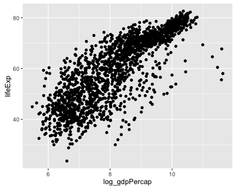
Estimate a model now that portrays lifeExp as a linear function of the log of gdpPercap.
\(lifeExp = \beta_{0} + \beta_{1}log(gdpPercap) + \epsilon\)
mod1b <- lm(lifeExp ~ log_gdpPercap, data = gapminder)Plot mod1b’s predicted values of lifeExp against gdpPercap.
mod1b_augm <- augment(mod1b, gapminder)
ggplot(mod1b_augm, aes(y = .fitted, x = gdpPercap)) +
geom_point()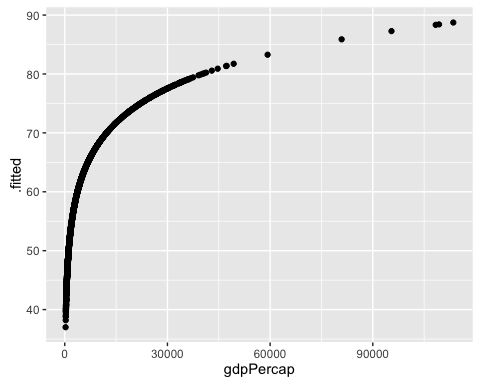
That makes a lot more sense!
Finally let’s see how well each model does in predicting the actual lifeExp values.
ggplot(mod1a_augm, aes(x = lifeExp, y = .fitted)) +
geom_point()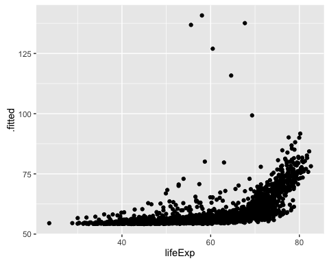
ggplot(mod1b_augm, aes(x = lifeExp, y = .fitted)) +
geom_point()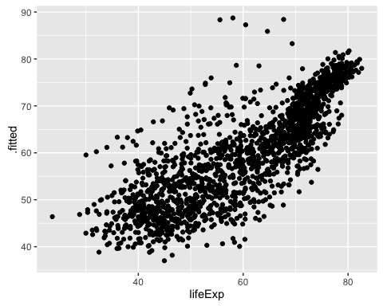
How would you create a dataset that contains the actual and predicted values of both models? Having such dataset would facilitate creating a side-by-side plot using the facet_wrap of ggplot.
predictions <- NULL
models_list <- list(mod1a, mod1b)
for (i in 1:length(models_list)) {
m <- models_list[[i]]
new_data <- data.frame(actual = m$model$lifeExp,
predicted = m$fitted.values,
model = i)
predictions <- rbind(predictions, new_data)
}ggplot(predictions, aes(x = actual, y = predicted)) +
geom_point() +
facet_wrap(~model)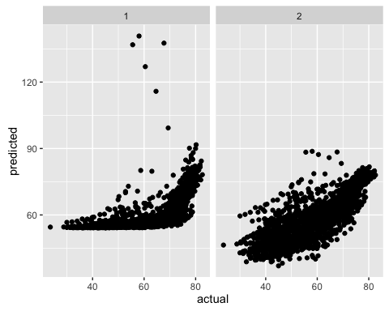
mod1b. How would you interpret the coefficients?Sometimes we believe that there is a U-shaped relation between a covariate and the dependent variable. For example, some scholars such as David I. Stern argue that there is an Environmental Kuznets Curve. This means that there is an inverted U-shaped relation between environmental quality and economic growth.
As we discussed in the beginning, sometimes there is a squared relation between a covariate and our dependent variable of interest (e.g. Kuznets curve).
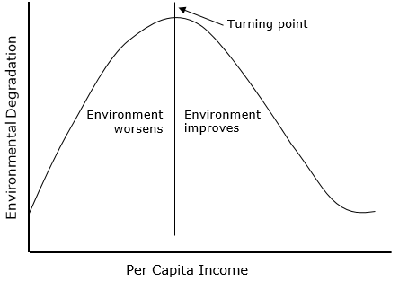
How do we incorporate this theoretical expectation into a linera model? Using a squared term!
Estimate the following models:
Estimate the models and use the augment function to add the predicted values of co2 to the dataset.
mod2a <- lm(co2 ~ gdpCapita, wdi)
mod2b <- lm(co2 ~ gdpCapita + I(gdpCapita^2), wdi)
mod2c <- lm(co2 ~ log(gdpCapita), wdi)
mod2a_aug <- augment(mod2a, wdi)
mod2b_aug <- augment(mod2b, wdi)
mod2c_aug <- augment(mod2c, wdi)For the 3 models, plot the predicted values of co2against gdpCapita.
ggplot(mod2a_aug, aes(x = gdpCapita, y = .fitted)) +
geom_point()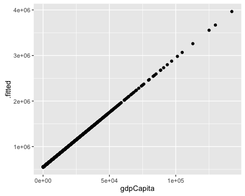
ggplot(mod2b_aug, aes(x = gdpCapita, y = .fitted)) +
geom_point()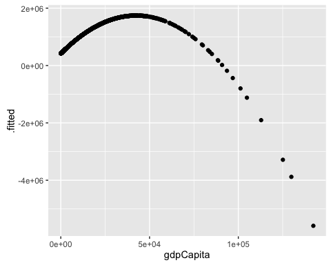
ggplot(mod2c_aug, aes(x = gdpCapita, y = .fitted)) +
geom_point()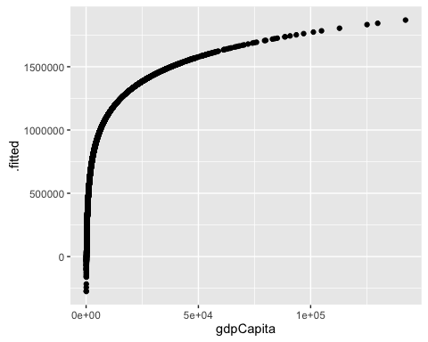
For the 3 models, plot the actual v. predicted values of co2.
ggplot(mod2a_aug, aes(x = co2, y = .fitted)) +
geom_point()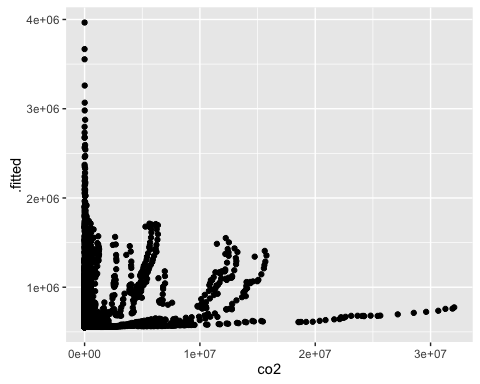
ggplot(mod2b_aug, aes(x = co2, y = .fitted)) +
geom_point()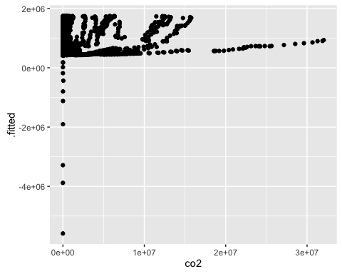
ggplot(mod2c_aug, aes(x = co2, y = .fitted)) +
geom_point()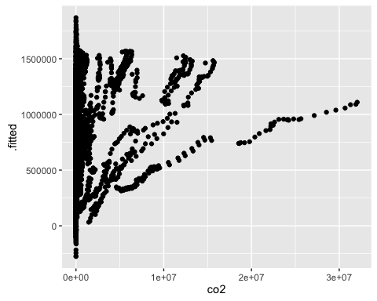
How would you create a dataset that contains the actual and predicted values of co2, and gdpCapita for the 3 models ? And how would you replicate the 2 types of plots we just used using the facet_wrap?
predictions2 <- NULL
models_list2 <- list(mod2a, mod2b, mod2c)
for (i in 1:length(models_list2)) {
m <- models_list2[[i]]
new_data <- data.frame(actual_co2 = m$model$co2,
predicted_co2 = m$fitted.values,
model = i)
predictions2 <- rbind(predictions2, new_data)
}
predictions2$gdpCapita <- mod2a$model$gdpCapitaggplot(predictions2, aes(x = gdpCapita, y = predicted_co2)) +
geom_point() +
facet_wrap(~model)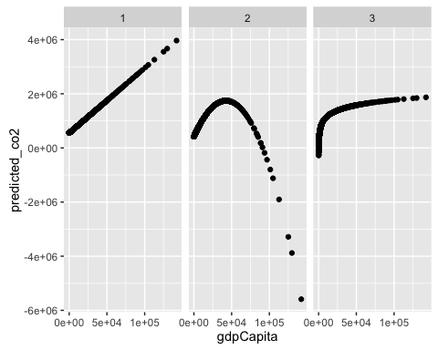
ggplot(predictions2, aes(x = actual_co2, y = predicted_co2)) +
geom_point() +
facet_wrap(~model)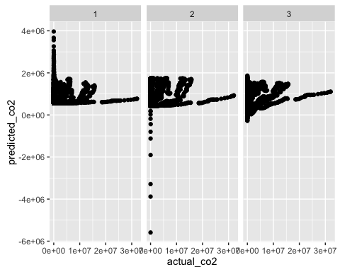